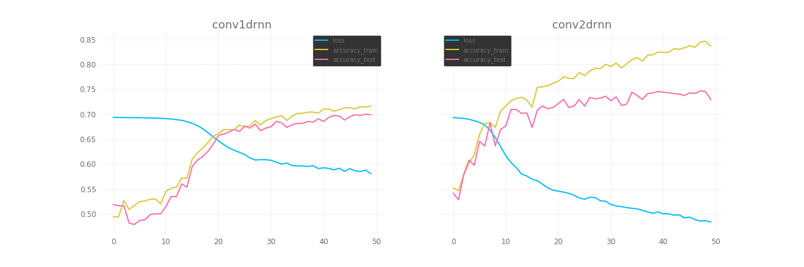

Classificação 4: RNN parte 2 (+ convolução)
Nota
os códigos estão aqui: https://github.com/demacdolincoln/test-sentiment_analysis
Admito que eu já disse tudo o que precisava dizer nos posts anteriores, para os testes dessa última etapa, usei 2 redes neurais com apenas 1 diferença entre elas, uma usa convolução 1d e outra 2d, e por não ter muito o que falar no momento vamos direto ao que interessa.
Procedimentos
-
init_hidden
-
recurrence (lstm)
-
convolução
- convolução (nn.Conv)
- ReLu
- MaxPool
- BatchNorm
-
funções lineares (3 no total)
Resultados:
É interessante notar que mesmo não alcançando um bom resultado, o aprendizado com a convolução 1d indica um aprendizado mais "real" dentre todos até agora, talvez se seguisse o aprendizado por mais 50 ou até mesmo 100 épocas, a acurácia talvez se equiparasse à convolução 2d.
Sobre a convolução 2d fica bem claro que mesmo mesmo alcançando basicamente o mesmo resultado que sem convolução, a distância entre a linha que representa os percentuais de acertos para os dados de treinamento em relação aos de teste é o maior dentre os 4 testes com redes convolucionais, isso indica um ajuste mais rápido ao treinamento ainda que para os testes tenha chegado no mesmo limite que na rnn sem convolução.
Resumindo os parágrafos anteriores, a convolução 1d + rnn leva a um aprendizado mais lento, o que não é ruim, aprender muito rápido nesse contexto significa não explorar adequadamente o espaço de busca a ser percorrido pela otimização (gosto de definir algoritmos de otimização como uma busca heurística num hiperplano altamente irregular na maioria dos casos), aprender devagar tem seu lado bom mas pela ausência de garantias que chegará em aproximadamente 75% de acerto nos dados de teste, só posso concluir que tende ao underfitting, especialmente por nenhum experimento que fiz, mesmo com taxa de aprendizado mais alta conseguiu chegar a tal resultado, porém só posso ter certeza treinando por mais épocas. Por outro lado a convolução 2d + rnn tendeu ao overfitting, isso fica bem claro pela distância crescente entre a acurácia para dados de testes e treinamento. Resumindo o resumo: neste caso não necessariamente adicionar etapas como a convolução foi um bom negócio.
---
| post scriptum: | Pensei em fazer um post final com um resumo geral, mas agora considero isso desnecessário, no repositório ainda bagunçado com os códigos desse experimento há um notebook chamado "relatorio.ipynb" onde estão os gráficos e uma tabela que indica coisas como quantidade de épocas taxas de aprendizado usadas. |
|---|
Comentários
Comments powered by Disqus